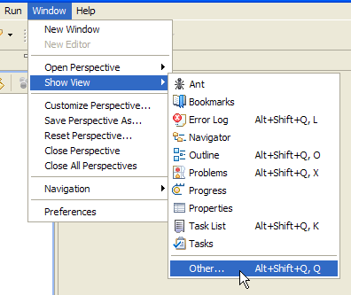
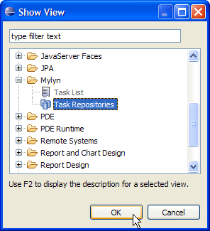
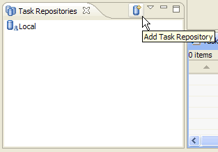
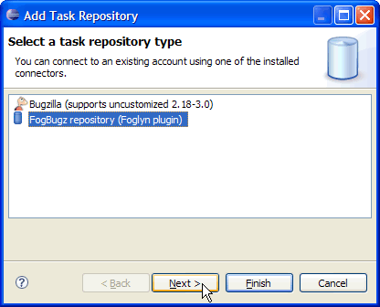
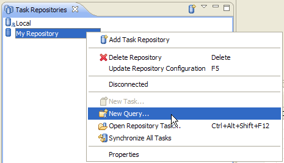
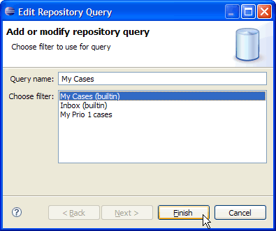
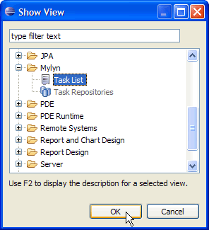
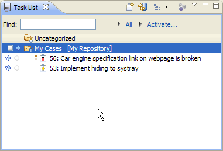

First steps with Foglyn
This tutorial will help you start using Foglyn. You will specify your FogBugz server and setup Foglyn to use your cases.
Adding Task Repository
First step in using Foglyn is configuring so-called Task Repository. Task repository is source of tasks, like FogBugz cases.
To add your FogBugz server as task repository, you need to open Task Repositories view first.
Select Window > Show View > Other in the menu at the top of the workbench and choose Mylyn > Task Repositories view from list of views.
 In Task Repositories view select Add Task Repository button from the toolbar or context menu.
In Add Task Repository dialog, select FogBugz repository (Foglyn plugin) and choose Next button.
In the next page, you need to enter details about your FogBugz server.
- Server: location of server, for example http://ondemand.fogbugz.com/
- Label: custom name of server, for example "My FogBugz Server".
- User ID: your full name or email address, as known to FogBugz.
- Password: your FogBugz password.
After you enter all these values, use Validate Settings button to check if Foglyn can connect to your server. When you are done, select Finish button.
Create new query
To work with your cases, you need to specify which cases should Foglyn present to you by creating a query. To create a query, go to Task Repositories view again, and select your new FogBugz repository you created in previous step. From context menu choose New Query… item.
Foglyn supports queries based on your filters defined in FogBugz. In Edit Repository Query dialog, simply choose your filter (for example My Cases filter), and click Finish button.
Your cases are visible in Task List view. To open this view, select Window > Show View > Other in the menu at the top of the workbench. In Show View dialog choose Mylyn > Task List view from list of views.
You have successfully completed this tutorial. You have added your FogBugz server and you can now see your FogBugz cases in Task List view. From here you can open your cases (by double-clicking) and start working with them.
